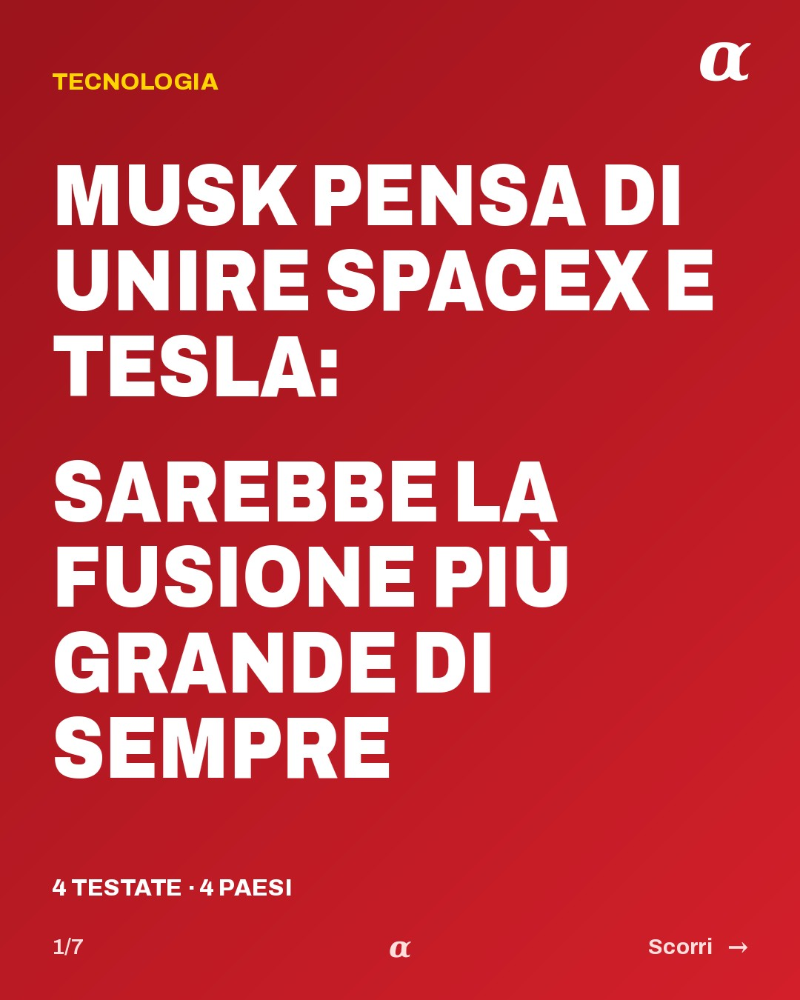
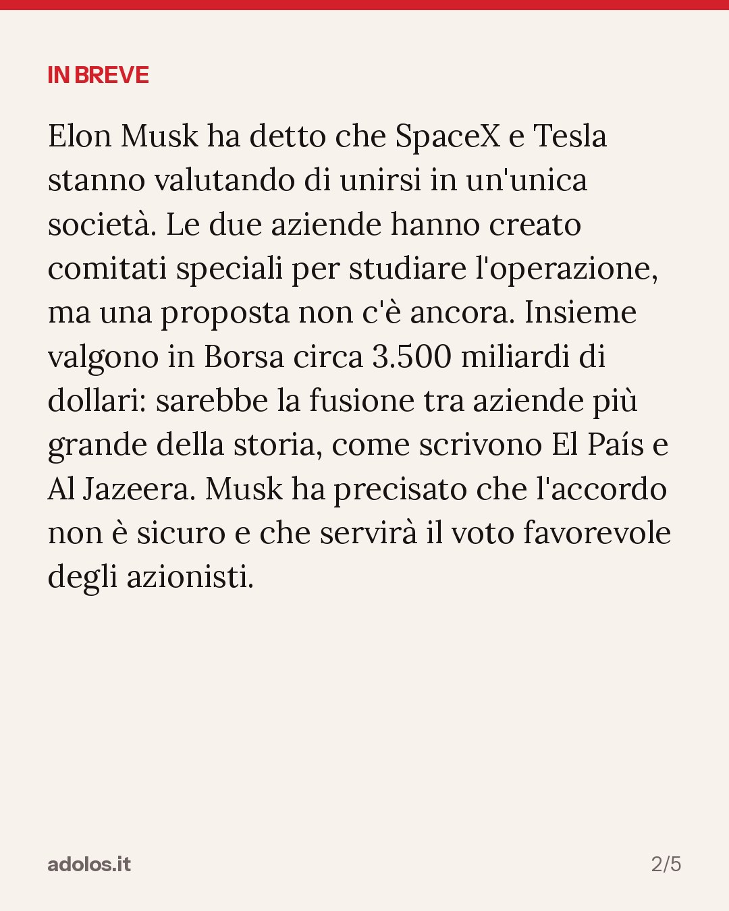
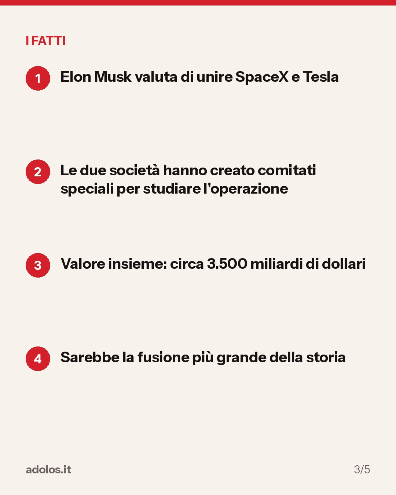
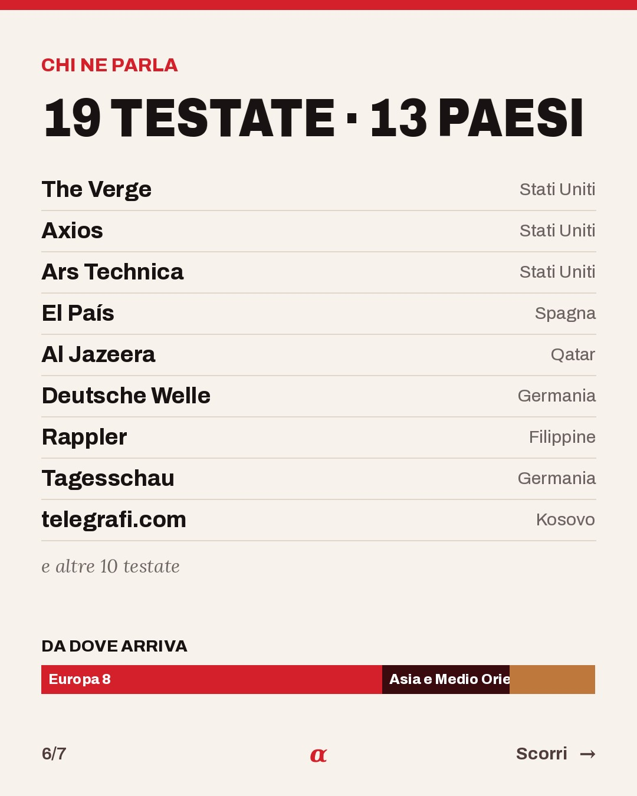

In breve
Elon Musk ha detto che SpaceX e Tesla stanno valutando di unirsi in un'unica società. Le due aziende hanno creato comitati speciali per studiare l'operazione, ma una proposta non c'è ancora. Insieme valgono in Borsa circa 3.500 miliardi di dollari: sarebbe la fusione tra aziende più grande della storia, come scrivono El País e Al Jazeera. Musk ha precisato che l'accordo non è sicuro e che servirà il voto favorevole degli azionisti.
- Elon Musk valuta di unire SpaceX e Tesla
- Le due società hanno creato comitati speciali per studiare l'operazione
- Valore insieme: circa 3.500 miliardi di dollari
- Sarebbe la fusione più grande della storia




Come sta andando
- 23:30 Esce per prima su The Verge
- 23:43 Prima conferma da Axios, dopo 13 min
- Adesso 19 testate in 13 paesi
Chi ne parla
Europa9
Americhe7
Asia e Medio Oriente3
Africa0
Oceania0
Ripresa da 19 testate in 13 paesi: The Verge, Axios, Ars Technica, El País e altre 15. La prima a darla è stata The Verge (Stati Uniti), 20 ottobre 2026, ore 23:30.
Chi la riporta
- The Verge da Stati Uniti, 20 ottobre 2026, ore 23:30Leggi l'articolo su theverge.com ↗
- Axios da Stati Uniti, 20 ottobre 2026, ore 23:43Leggi l'articolo su axios.com ↗
- Ars Technica da Stati Uniti, 21 ottobre 2026, ore 00:04Leggi l'articolo su arstechnica.com ↗
- El País da Spagna, 21 ottobre 2026, ore 00:19Leggi l'articolo su elpais.com ↗
- Al Jazeera da Qatar, 21 ottobre 2026, ore 05:51Leggi l'articolo su aljazeera.com ↗
- Deutsche Welle da Germania, 21 ottobre 2026, ore 07:53Leggi l'articolo su dw.com ↗
- Rappler da Filippine, 21 ottobre 2026, ore 08:06Leggi l'articolo su rappler.com ↗
- Tagesschau da Germania, 21 ottobre 2026, ore 09:11Leggi l'articolo su tagesschau.de ↗
- telegrafi.com da Kosovo, 21 ottobre 2026, ore 09:30Leggi l'articolo su telegrafi.com ↗
- CNBC da Stati Uniti, 21 ottobre 2026, ore 10:28Leggi l'articolo su cnbc.com ↗
- BBC News da Regno Unito, 21 ottobre 2026, ore 10:42Leggi l'articolo su bbc.co.uk ↗
- botasot.info da Albania, 21 ottobre 2026, ore 12:00Leggi l'articolo su botasot.info ↗
- France 24 da Francia, 21 ottobre 2026, ore 12:26Leggi l'articolo su france24.com ↗
- Hindustan Times da India, 21 ottobre 2026, ore 12:42Leggi l'articolo su hindustantimes.com ↗
- NZZ da Svizzera, 21 ottobre 2026, ore 13:25Leggi l'articolo su nzz.ch ↗
- HDblog da Italia, 21 ottobre 2026, ore 14:00Leggi l'articolo su hdmotori.it ↗
- G1 da Brasile, 21 ottobre 2026, ore 15:30Leggi l'articolo su g1.globo.com ↗
- CBS News da Stati Uniti, 21 ottobre 2026, ore 17:29Leggi l'articolo su cbsnews.com ↗
- The Hill da Stati Uniti, 21 ottobre 2026, ore 17:51Leggi l'articolo su thehill.com ↗